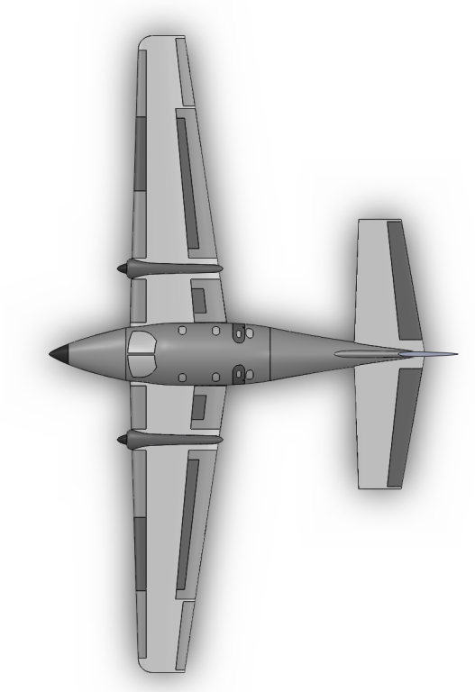
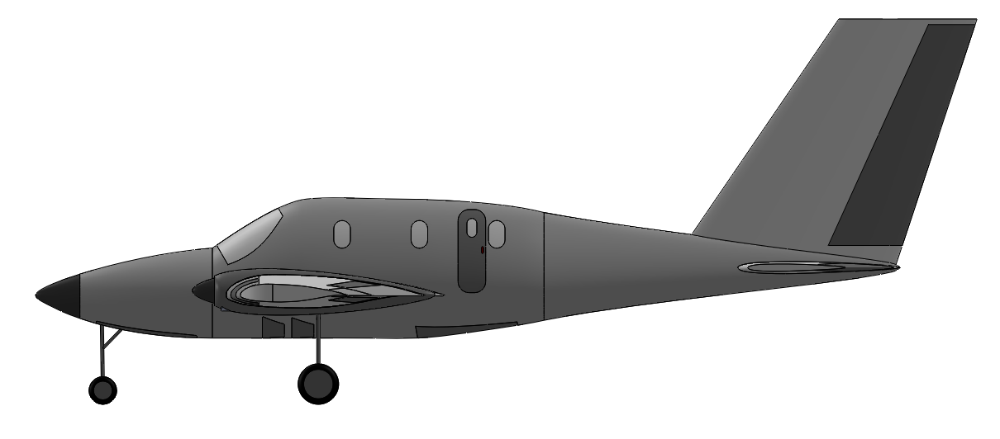
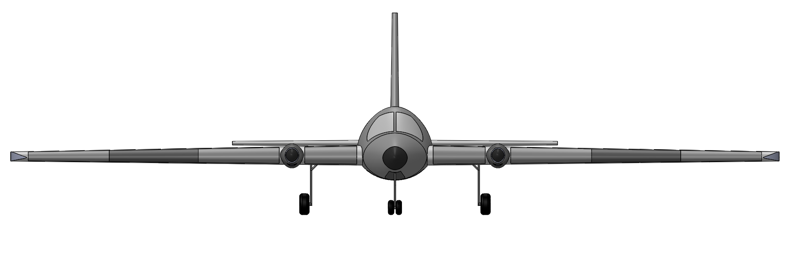

AEROSPACE ENGINEERING / PROJECT
Hybrid-Electric STOL Aircraft
Senior design · configuration & preliminary analysis
 Hybrid-electric STOL · project CAD
Hybrid-electric STOL · project CADOverview & objectives
I am leading our AIAA Hybrid-Electric STOL senior-design team, beginning in August 2026. We are developing a commuter-aircraft concept against the 2026–2027 Open Division RFP, which assumes entry into service in 2035.
My responsibilities & contributions
I performed most of the project calculations and created all of the aircraft CAD. I developed the SOLIDWORKS geometry for the wings, fuselage, nacelles, and landing gear, and iteratively updated aircraft geometry, component weights, center of gravity, lift-to-drag ratio, and battery sizing against the RFP. I've also evaluated weight distribution and conducted engine and motor trade studies.
RFP requirements & design targets
We are designing for one pilot and seven passengers, a 400 nmi mission at maximum payload with IFR reserves, and a minimum cruise speed of 225 knots. The RFP sets a maximum takeoff and landing field length of 300 ft over a 50 ft obstacle on dry pavement at sea level, ISA + 18°F, and an initial climb rate of at least 1,500 ft/min with both propulsion systems operating.
We are also evaluating the RFP objectives of at least 250 knots cruise speed and at least 200 nmi electric range. These are requirements and objectives my team is working toward.
My engineering methods & analysis
I have used aerodynamic lift and flap calculations, aircraft weight and center-of-gravity cases, and landing-gear studies to iterate the design. My gear calculations address static loading, braking load transfer, overturn, tipback, and clearance geometry. I have compared engine and motor options to guide propulsion selection.
My CAD models & technical imagery
I created the complete aircraft CAD, including the orthographic, top, side, front, and bottom views. My configuration uses a high wing, wing-mounted propulsion, a conventional tail, and tricycle landing gear. The selected views below show complementary perspectives of my model.
My results & next steps
I have developed the aircraft CAD configuration and a preliminary calculation workflow to iterate the design against the RFP. My team and I are continuing to refine the design and evaluate compliance with the RFP; final specifications and validation results are not yet presented here.


